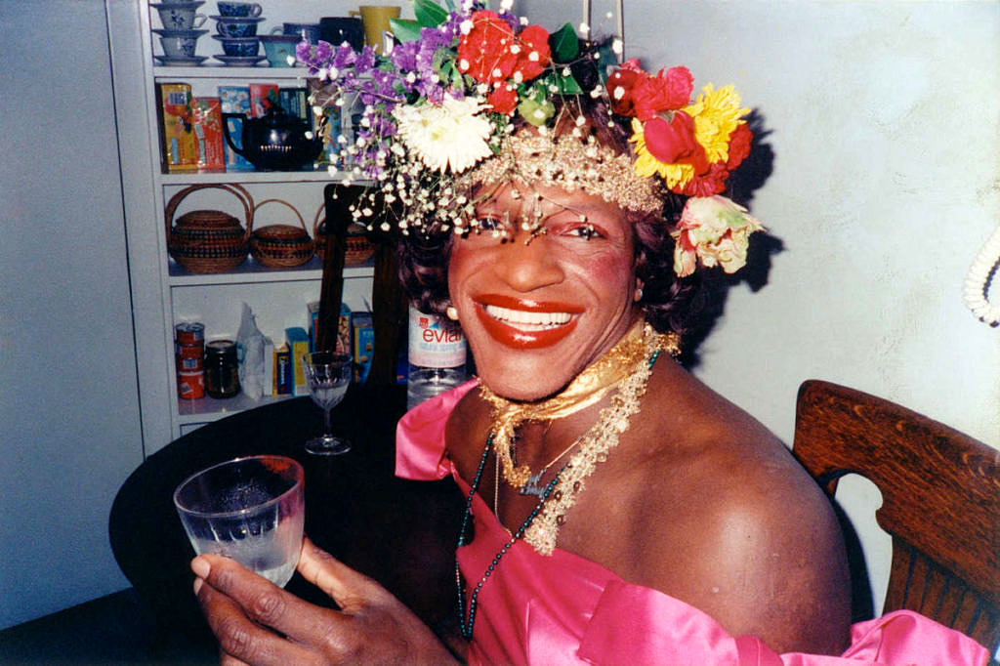
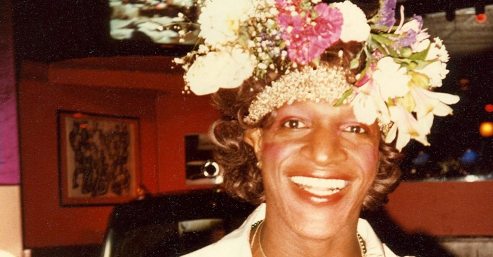
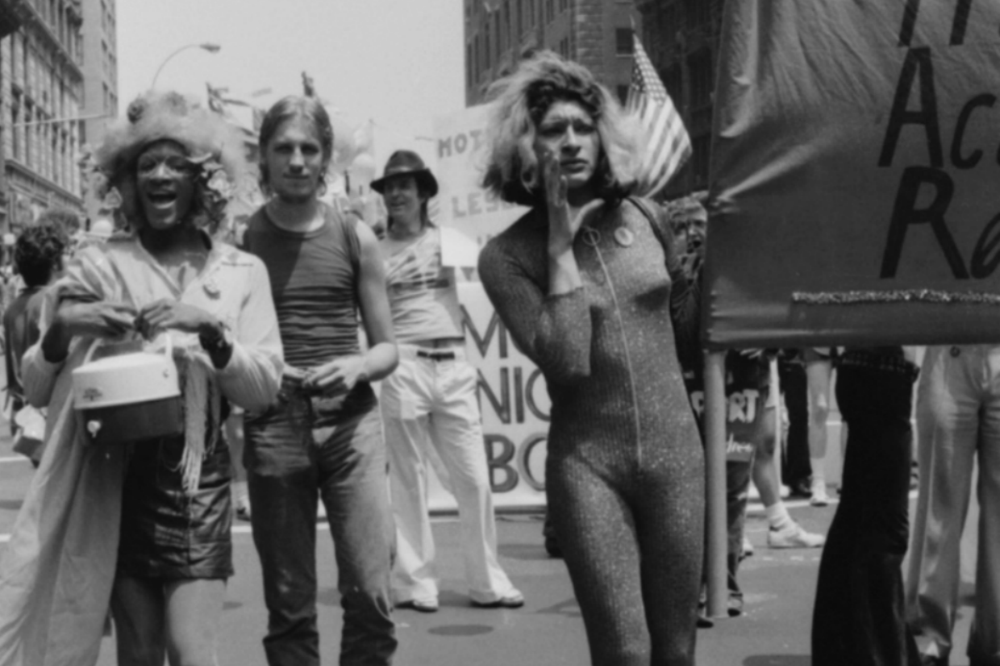
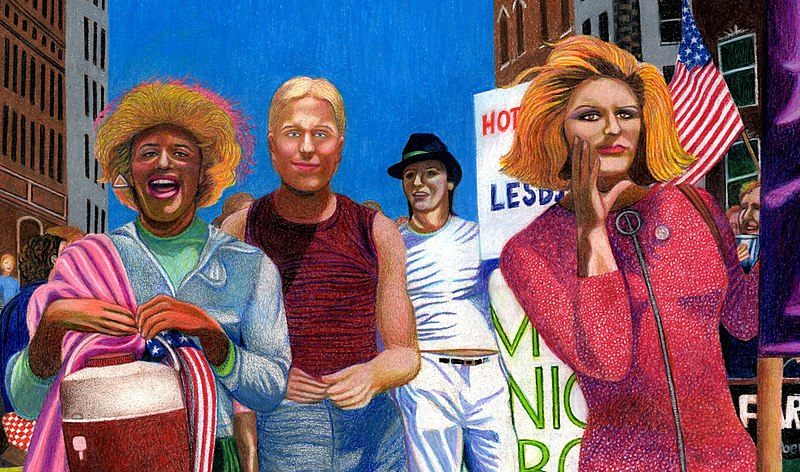

— Marsha P.Johnson —
Marsha P. Johnson (Elizabeth, 24 de agosto de 1945 — Nova Iorque, 6 de julho de 1992), foi uma ativista americana pela libertação gay e auto-identificada como mulher trans/travesti.
Johnson foi uma das personalidades proeminentes da Rebelião de Stonewall, em 1969.
Embora alguns tenham creditado erroneamente a Johnson por iniciar os tumultos, Johnson sempre foi franco sobre não ter estado presente quando os tumultos começaram.
— Fotos —



